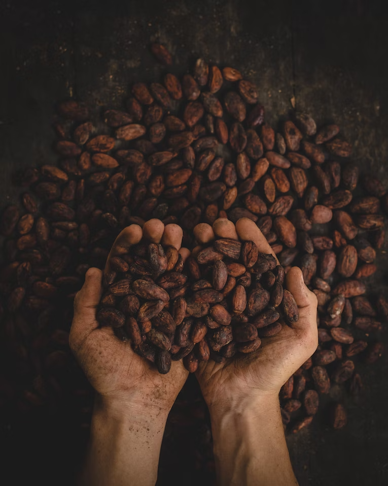

Bienvenue dans notre boutique, où règne une ambiance chaleureuse et accueillante qui éveille tous vos sens. Le personnel attentionné et passionné est toujours prêt à partager ses connaissances et ses recommandations, "Le café, bien plus qu'une simple boisson, il est un véritable rituel qui incarne l'art de vivre. Entre moments de partage et instants de contemplation, chaque tasse devient une invitation à savourer la vie et à en célébrer les nuances. Que vous soyez un connaisseur de café ou un novice curieux, nous sommes là pour vous guider dans un voyage sensoriel inoubliable, où chaque gorgée révèle un monde de saveurs riches et complexes.
Jean et Jacques Pepper : Quand le café devient une célébration de l'art de vivre.

nouveautés
Chaque tasse est une invitation à savourer la richesse et les nuances du café. Explorez nos sélections exclusives et laissez-vous séduire.
découvrirChaque tasse est une invitation à savourer la richesse et les nuances du café. Explorez nos sélections exclusives et laissez-vous séduire.
découvrirChaque tasse est une invitation à savourer la richesse et les nuances du café. Explorez nos sélections exclusives et laissez-vous séduire.
découvrir